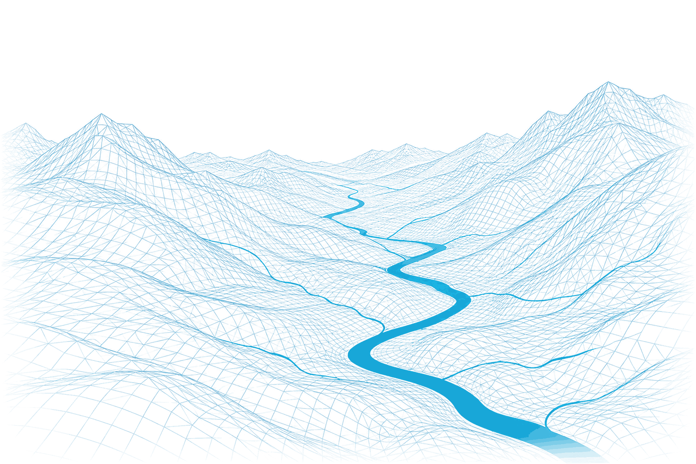
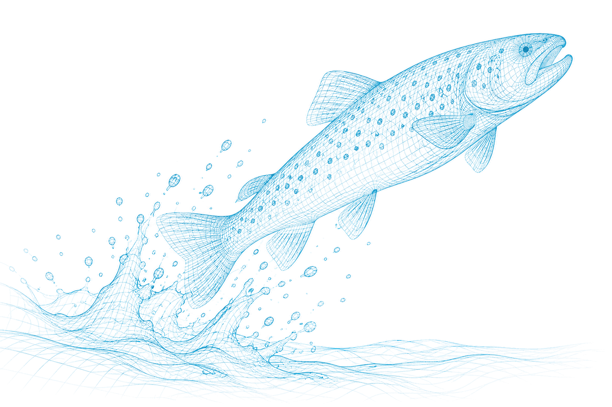
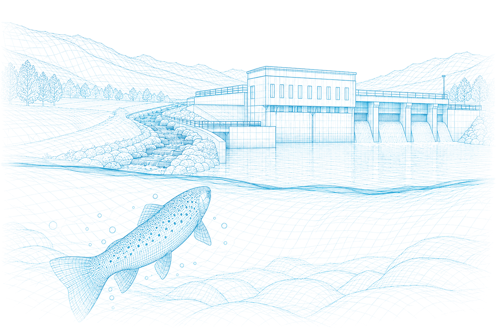
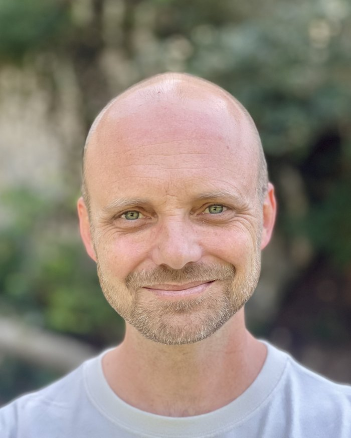

Gewässerökologie & Ökohydraulik
Thalweg ist ein unabhängiges Fachbüro für Gewässerökologie, spezialisiert auf die Wiederherstellung der Fischwanderung. Im Auftrag von Behörden, Wasserkraftwerken, Ingenieurbüros und NGOs – von der fachlichen Beratung bis zur Projektleitung, auf Französisch und Deutsch.
Kontakt
Ansatz
Thalweg (oder Talweg): Verbindungslinie der tiefsten Punkte in den Querschnitten eines Fliessgewässers (Lexikon der Geowissenschaften)
Ein Thalweg ist der Ort, an dem Gewässer auf natürliche Weise zusammenfliessen. Bei Thalweg fliessen Kompetenzen zusammen – in Richtung der Lösung, die sich als selbstverständlich darstellt.
Das Gesetz legt Ziele fest – Sanierung, Renaturierung, Schutz. Um diese zu erreichen, sind drei Dinge erforderlich: die Fische verstehen, die möglichen Lösungen kennen – ihre Stärken, ihre Grenzen, ihre Kosten – und die gesetzlichen und Verfahrenskriterien beherrschen. Thalweg vereint diese drei Perspektiven und weiss, wo die Kompetenzen zu finden sind, die sie ergänzen – um jedem Projekt die besten Erfolgsaussichten zu bieten.
Das Büro ist als punktueller Experte, zur Überprüfung oder als Projektbegleiter tätig – allein oder im Konsortium, je nach den Anforderungen des Mandats.

Leistungen
Sanierung Wasserkraft
Defizitanalyse, Variantenstudien, Führung der Sanierungsverfahren, Koordination der Sanierungsbereiche (Fischwanderung, Geschiebe, Schwall–Sunk, Restwasser), Finanzierung der Massnahmen und Wirkungskontrolle – vom punktuellen Gutachten bis zur vollständigen Übernahme des Dossiers.
Konzessionserneuerung
Führung des gesamten Verfahrens oder punktuelle Unterstützung, Prüfung der regulatorischen Konformität in jedem Schritt – ein kohärentes Dossier in administrativer, ökologischer und finanzieller Hinsicht.
Wirkungskontrolle
Präzise Anforderungen in einem präzisen Kontext: Monitoringkonzept, statistische Planung, Datenanalyse – bis zum Wirkungsbericht.
Daten: Analyse, Automatisierung, Literatursynthesen
Einen vorhandenen Datensatz analysieren; die Verwaltung und die wiederkehrenden Datenanalysen mit einem individuell angepassten Tool automatisieren; ein Forschungsprojekt leiten – Verhalten, Bewegungen, Populationsdynamik.
Interessenausgleich
Denkmalschutz, Landwirtschaft, Anstösser, Akzeptanz bei NGOs und Öffentlichkeit: Blockadepunkte zwischen divergierenden Interessen identifizieren und konkrete Lösungen vorschlagen.
Weiterbildung & Wissensvermittlung
Kurse für Fachleute, Vermittlung für Projektträger, Vorträge: die Komplexität dem Zielpublikum anpassen und die Kernaussagen vermitteln.
Dossier-Review
Eine unabhängige Überprüfung, bevor es weitergeht: Ein Bauherr möchte sich von der Qualität eines Berichts überzeugen; ein Büro möchte sich sicher sein, dass seine Unterlagen vollständig sind, bevor es sie einreicht. Thalweg liefert einen strukturierten Überprüfungsbericht – Übereinstimmung mit den gesetzlichen Anforderungen und den geltenden Normen, technische Vollständigkeit, zu korrigierende Punkte, Prioritäten –, der auf der Erfahrung aus der Prüfung von Dossiers basiert. Um das Projekt abzusichern und Zeit zu sparen.
Je nach Bedarf: Review allein, mit Besprechung der Ergebnisse oder Begleitung bis zur Eingabe. Der Aufwand richtet sich nach dem Dossier – eher einige Tage als einige Monate; Offerte nach einem ersten Austausch.

Über mich

Simon Gingins, Biologe, Dr. sc. in Verhaltensbiologie (Université de Neuchâtel). Nach einem Postdoktorat am Max Planck Institute of Animal Behavior und an der Universität Konstanz, das sich mit dem Gruppenverhalten von Fischen und deren 3D-Videoüberwachung befasste, habe ich sieben Jahre in der Sanierung der Wasserkraft gearbeitet: zuerst beim Kanton Freiburg, dann beim Bundesamt für Umwelt (BAFU) als Spezialist für Fischwanderung und die Finanzierung der Massnahmen.
Aus zehn Jahren Forschung – und rund fünfzehn Publikationen – habe ich die Leitung wissenschaftlicher Projekte und einen Reflex mitgenommen: die Methode zu wählen, die die gestellte Frage wirklich beantwortet, wobei die Daten als Entscheidungsgrundlage dienen. Beim BAFU habe ich Sanierungsprojekte aus der ganzen Schweiz geprüft – ihre Planung, ihre Stärken, ihre Schwächen – und gleichzeitig den ständigen Bezug zur Forschung und zu neuen technischen Massnahmen gewahrt.
Ich gründe Thalweg im Jahr 2027, um diesen Überblick in den Dienst derjenigen zu stellen, die ihn benötigen – und die Biologie wieder in den Mittelpunkt der Projekte zu rücken, wo sich ihr Erfolg entscheidet.